This document covers the Telegram notification system that sends formatted messages for various trading events including buy signals, position closures, stop losses, take profits, and monitoring updates. The integration provides real-time notifications to users via Telegram channels using markdown-formatted messages in Russian language.
For information about the core trading signal generation that triggers these notifications, see Signal Generation and Validation. For details about position management logic that determines when notifications are sent, see Position Management and Closing.
The Telegram integration operates through a set of specialized markdown generators that format trading event data into user-friendly messages. Each trading event type has a dedicated generator function that creates structured notifications with consistent formatting.

The generateBuyMarkdown function creates notifications when new positions are opened. These messages include comprehensive trade details and risk management parameters.
| Field | Description | Format |
|---|---|---|
| Symbol | Trading pair identifier | signal.symbol |
| Buy Price | Entry price | Formatted via binanceService.formatPrice() |
| Stop Loss | Risk management level | Price + percentage difference |
| Take Profit | Target profit level | Price + percentage difference |
| Quantity | Position size | Formatted via binanceService.formatQuantity() |
| Total Investment | Position value | quantity * buyPrice |
| Comment | AI-generated analysis | signal.comment |
The generateCloseMarkdown function handles notifications for position closures, differentiating between profitable sales and asset unfreezing based on the close price relative to buy price.

Both generateStopLossMarkdown and generateTakeProfitMarkdown follow similar patterns but with different messaging context:
generateWatchMarkdown: Provides position monitoring updates with current P&L statusgenerateWaitMarkdown: Informs users when the system is waiting for market signalsAll markdown generators utilize consistent formatting utilities:

Each generator implements consistent P&L calculations:
const totalInvested = signal.quantity * signal.buyPrice;
const totalReceived = closePrice * signal.quantity;
const profitLoss = totalReceived - totalInvested;
const profitLossPercentage = (profitLoss / totalInvested) * 100;
The system uses the CC_TELEGRAM_BOT environment variable to append bot reference links to messages:
| Variable | Purpose | Usage |
|---|---|---|
CC_TELEGRAM_BOT |
Bot username | Generates t.me/{botName}?start links |
When configured, each message includes a call-to-action link formatted as:
**👉 Узнать подробнее**: [@{botName}](https://t.me/{botName}?start)
All generated messages follow a consistent Russian-language structure:
The Telegram notification system integrates with the broader trading system through service injection patterns, where each generator receives a self parameter containing:
binanceService: For price and quantity formattingThis design allows the notification system to format data consistently while remaining decoupled from the core trading logic.